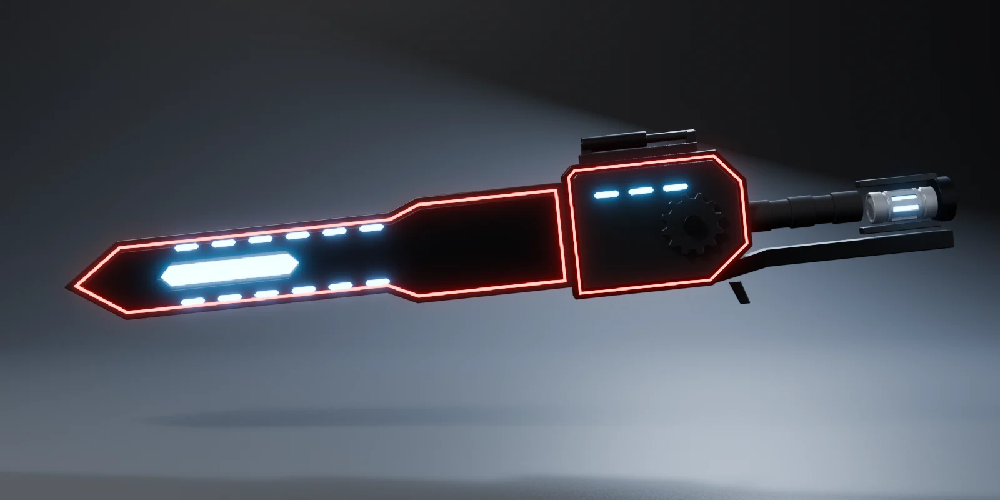
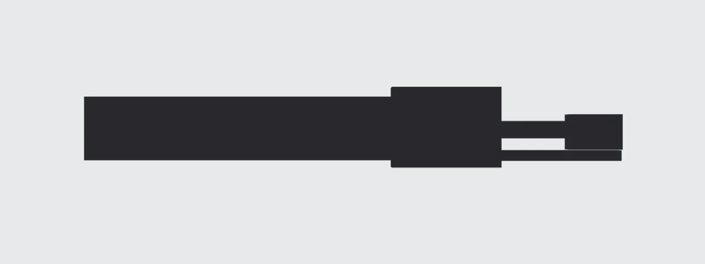
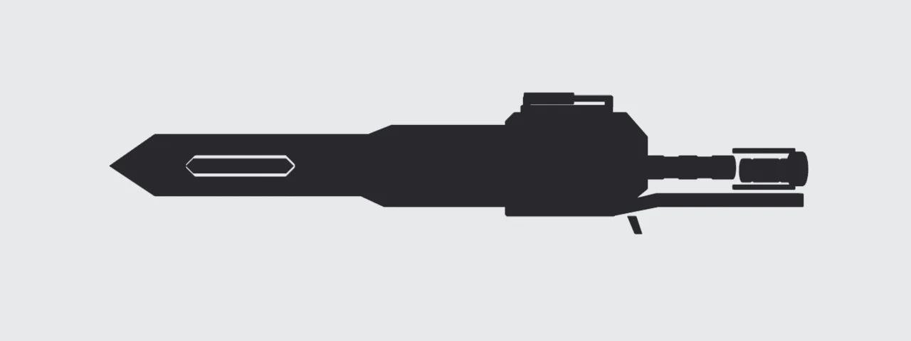
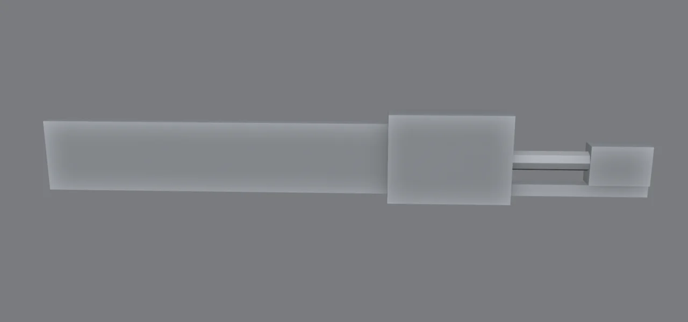
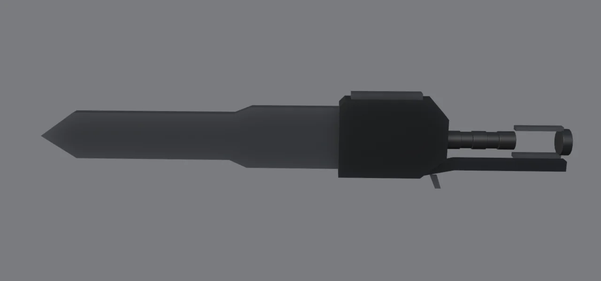
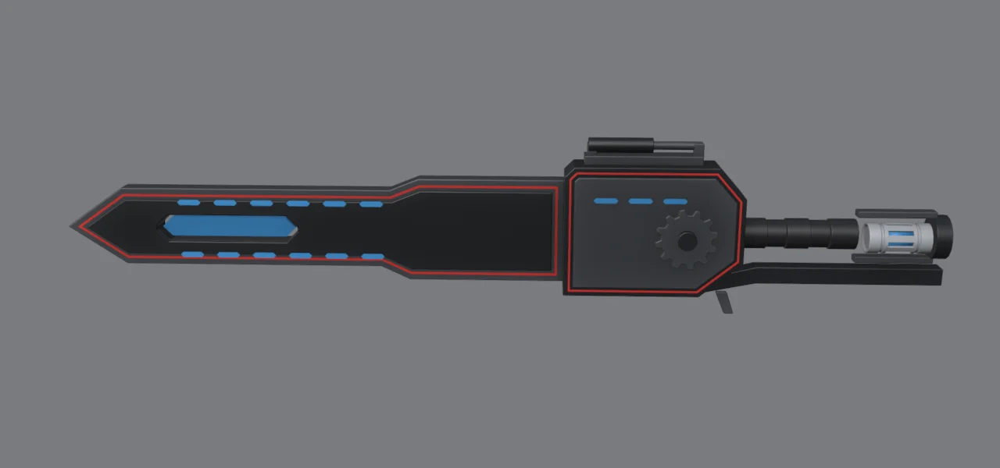

Lo que vas a forjar // objetivo

Esta pieza reúne todo lo que has aprendido: Inset/Extrude, booleanos, Array, floaters, Bevel + Weighted Normal y tu propio kit. Lo nuevo es cómo decidir qué modelar y dónde.
El proceso de diseño // concepto
Silueta
¿Se reconoce en negro, sin detalles? Si no, nada lo salvará.
Blockout
Cajas y cilindros para decidir proporciones. Rápido y sin apego.
Formas
Perfiles definitivos: chaflanes, ángulos y transiciones.
Detalle
Capas, paneles, luces y mecanismos, con intención (módulo 5).
Acabado
Bevel, materiales y luz.
Iterar
Volver atrás es normal. Por eso trabajamos de forma no destructiva.
El error de principiante: empezar por el detalle. Modelar tornillos durante horas en una pieza cuyas proporciones no funcionan. Avanza por fases y no pases a la siguiente hasta que la anterior se lea bien.
La silueta manda // diseño


Las dos siluetas tienen la misma estructura: hoja larga, cuerpo alto, empuñadura fina y culata. El blockout ya «funcionaba». El trabajo posterior solo refina: la punta, el escalón de la hoja, los chaflanes del cuerpo, el pistón superior y la ventana de luz, que rompe la masa negra de la hoja.
Modo silueta en Blender: menú Shading del visor → Lighting Flat, Color Single en negro y Background Viewport en gris claro. Alterna a este modo cada poco rato mientras diseñas.
Lenguaje de formas // diseño
Las formas básicas transmiten sensaciones. Un diseño coherente elige un lenguaje y lo repite:
| Forma | Transmite | En esta arma |
|---|---|---|
| Triángulo / punta | Peligro, agresividad, dirección | La punta de la hoja y los escalones a 45°. |
| Rectángulo / chaflán | Tecnología, solidez, fabricación | El cuerpo, las placas y el hexágono alargado que se repite en la ventana y en cada luz. |
| Círculo | Mecánica, movimiento, energía | El engranaje, la empuñadura, el pistón y la celda. Todo lo que «funciona» es redondo. |
Repetir un motivo (aquí, el hexágono alargado) hace que piezas distintas parezcan parte del mismo diseño. Lo mismo que hiciste con tu kit en el módulo 5, pero a escala de arma.
Gírala paso a paso // 3D
Referencias y boceto
- Reúne referencias (tu imagen, armas de anime, herramientas reales, maquinaria). PureRef es un programa gratuito para tenerlas todas en un tablero.
- Haz un boceto de la silueta en papel o en 2D. No hace falta que sea bonito: busca proporciones.
- En Blender, vista frontal ortográfica (Num 1) → Shift+A → Image → Reference y carga tu boceto. Ponle opacidad baja en sus propiedades.
Blockout

- Una caja por gran masa: hoja (2.6 × 0.1 × 0.54), cuerpo (0.92 × 0.22 × 0.68), empuñadura (cilindro), culata y bastidor inferior. Usa el panel N → Dimensions.
- Ponle a cada caja un nombre en el Outliner. Con decenas de piezas, «Cube.037» no te dirá nada.
- Comprueba la silueta y las proporciones. Prueba variantes duplicando la colección (Shift+D): hoja más ancha, empuñadura más larga… y quédate con la mejor.
Escala real: esta arma mide unos 4,5 m porque es para un mecha. Si fuera para un humano, todo cambiaría: grosores, tamaño de los tornillos, número de detalles. Decide la escala en el blockout.
Formas: perfiles extruidos

Las armas y las piezas planas se modelan dibujando su perfil en vista lateral y dándole grosor:
- Vista frontal (Num 1). Añade un plano, entra en modo edición, selecciona todo y bórralo (X → Vertices). Te queda un objeto vacío.
- Con Ctrl+clic derecho vas añadiendo vértices conectados: calca el contorno de la hoja (punta, escalón, base). Activa el imán a la rejilla (Shift+Tab, Increment) para que los ángulos te queden limpios.
- Cierra el contorno (selecciona el primer y el último vértice y pulsa F), después A y F otra vez para crear la cara.
- En modo objeto, modificador Solidify: Thickness 0.1, Offset 0. El grosor queda centrado y puedes cambiarlo cuando quieras.
- Repite con el cuerpo (grosor 0.22), el bastidor y el gatillo.
¿Por qué un perfil + Solidify? El contorno es lo que define el diseño, y así lo editas en 2D, que es mucho más fácil. El grosor es un número que puedes ajustar en cualquier momento.
Capas de detalle
| Capa | Técnica |
|---|---|
| Placa interior | Duplica la cara del perfil (Shift+D en modo edición), I 0.06, borra el anillo exterior y separa lo que queda con P → Selection. Dale un Solidify un poco más grueso que la hoja: sobresale y crea una capa. |
| Línea roja | Otra copia del perfil con dos Inset seguidos (0.032 y 0.012). Quédate solo con el anillo fino del medio, dale un Solidify mínimo y un material emisivo rojo. Va en el canal que queda entre el borde y la placa. |
| Ventana de energía | Cortador booleano (módulo 3) con forma de hexágono alargado que atraviesa hoja y placa. Dentro, una barra emisiva azul algo más pequeña. |
| Luces discontinuas | Un guion hexagonal + Array (6 copias) + Mirror en Y para el otro lado (módulo 3). |
| Engranaje | Gratis con la extensión Extra Mesh Objects (módulo 0): Shift+A → Mesh → Extras → Gear. Con un eje cilíndrico que lo atraviesa. |
| Pistón | Camisa oscura + vástago claro más fino sobre un riel, con dos soportes. En el módulo 7 aprenderás a hacer que se mueva. |
| Celda | ¡La del módulo 1! File → Append → celda_energia.blend → Object, o arrástrala desde tu biblioteca del Asset Browser (módulo 5). |
Acabado

- Bevel (Angle, Harden Normals) + Shade Smooth en todas las piezas. Truco: selecciona todas, configura una, y con la activa usa Ctrl+L → Copy Modifiers.
- Materiales: negro mate (Roughness alta) para el cuerpo y grafito metálico para la hoja. Así se distinguen aunque los dos sean oscuros.
- Emisivos: rojo para las líneas (Strength ~6) y azul para la ventana y las luces (~9).
- Renderiza con el estudio del módulo 0. Con objetos tan oscuros, la contraluz es la que dibuja los bordes.
Reparto del detalle // diseño
Mira de nuevo el render final: la mitad izquierda es casi lisa (una placa, una ventana y una fila de luces) y el detalle se concentra a la derecha, en el mecanismo: engranaje, pistón, empuñadura y celda. Es lo mismo que pasa en tu imagen de referencia.
- La zona lisa hace que la zona detallada destaque, y viceversa.
- El detalle va donde «hay mecánica»: es creíble que ahí haya piezas.
- Las líneas rojas recorren toda el arma y la unifican visualmente.
Reto: tu arma // checklist
Diseña tu propia arma mecha siguiendo el proceso completo. Ideas: un hacha-cañón, una lanza con batería, un escudo con una hoja retráctil o un rifle con bayoneta.